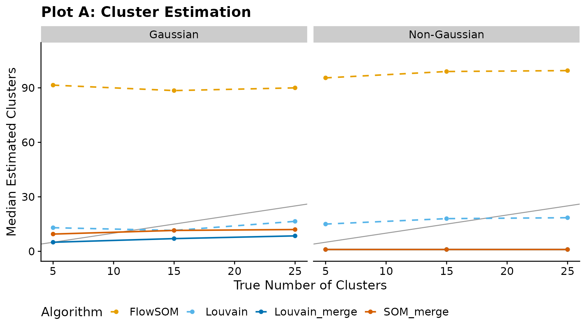
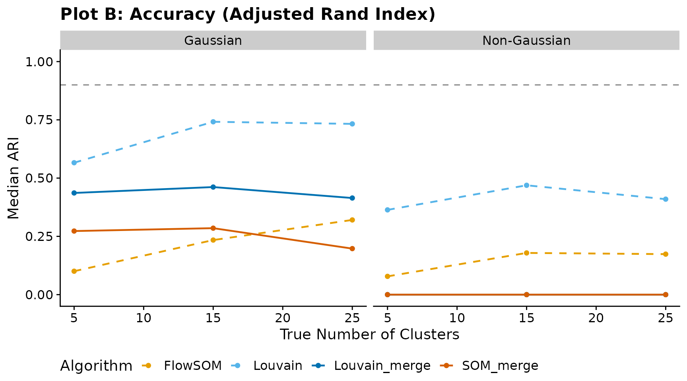

Benchmarking cluster_som_merge and cluster_louvain_merge via FAUST Simulations
Source:vignettes/benchmarking-merges.Rmd
benchmarking-merges.RmdOverview
This vignette evaluates cluster_som_merge() and
cluster_louvain_merge() against their standard counterparts
(FlowSOM-style SOM clustering and Louvain community detection) using the
FAUST simulation framework (Greene et al., 2021, Patterns).
Our label-based merging strategies use
cluster_merge_bin() to assign threshold-derived bin labels,
then cluster_merge_unimodal() to iteratively merge
over-segmented clusters that remain unimodal (assessed via Hartigan’s
Dip Test and SCAMP L-moment scoring). The goal is to recover the true
number of clusters more accurately than the raw algorithms while
maintaining high Adjusted Rand Index (ARI).
Configuration
Set full <- TRUE below to run the complete
FAUST-paper grid (12 cluster counts × 5 iterations × 2 regimes on 250
000 cells per iteration). The full run takes several hours. By default,
the vignette runs a quick demonstration with reduced parameters.
full <- FALSE
library(UtilsGGSV)
library(ggplot2)
library(dplyr)
#>
#> Attaching package: 'dplyr'
#> The following objects are masked from 'package:stats':
#>
#> filter, lag
#> The following objects are masked from 'package:base':
#>
#> intersect, setdiff, setequal, union
if (full) {
cluster_counts <- seq(5, 115, by = 10)
n_iter <- 5L
n_samples <- 10L
n_cells_per_sample <- 25000L
n_dims <- 10L
noise_dims <- 5L
} else {
cluster_counts <- c(5, 15, 25)
n_iter <- 2L
n_samples <- 2L
n_cells_per_sample <- 500L
n_dims <- 5L
noise_dims <- 2L
}
transforms <- c("none", "faust_gamma")[[1]]1. Helpers
Adjusted Rand Index
A self-contained ARI implementation so the vignette has no extra dependencies:
ari <- function(labels_true, labels_pred) {
ct <- table(labels_true, labels_pred)
sum_comb2 <- function(x) sum(choose(x, 2))
a <- sum_comb2(ct)
b <- sum_comb2(rowSums(ct))
cc <- sum_comb2(colSums(ct))
n <- sum(ct)
d <- choose(n, 2)
expected <- b * cc / d
max_index <- (b + cc) / 2
if (max_index == expected) return(1)
(a - expected) / (max_index - expected)
}Algorithm runner
Applies all four algorithms to a single data matrix:
run_algorithms <- function(mat, vars) {
thresholds <- stats::setNames(
lapply(vars, function(v) 4),
vars
)
# 1. FlowSOM (standard SOM assignment)
som_cl <- cluster_som(mat, vars = vars)
# 2. cluster_som_merge (SOM + bin + unimodal merge)
som_merge_res <- cluster_som_merge(
mat, vars = vars, thresholds = thresholds
)
# 3. Louvain (standard community detection)
louv_cl <- cluster_louvain(mat, vars = vars)
# 4. cluster_louvain_merge (Louvain + bin + unimodal merge)
louv_merge_res <- cluster_louvain_merge(
mat, vars = vars, thresholds = thresholds
)
list(
FlowSOM = list(
labels = som_cl,
k = length(unique(som_cl))
),
SOM_merge = list(
labels = som_merge_res$assign$merged,
k = length(unique(som_merge_res$assign$merged))
),
Louvain = list(
labels = louv_cl,
k = length(unique(louv_cl))
),
Louvain_merge = list(
labels = louv_merge_res$assign$merged,
k = length(unique(louv_merge_res$assign$merged))
)
)
}2. Load or compute results
If pre-computed results exist (generated by
data-raw/benchmarking_merges.R), they are loaded directly.
Otherwise the simulation grid defined above is executed.
precomputed_path <- system.file(
"extdata", "benchmarking_merges.rds",
package = "UtilsGGSV"
)
if (nzchar(precomputed_path) && file.exists(precomputed_path)) {
message("Loading pre-computed results from ", precomputed_path)
bench_data <- readRDS(precomputed_path)
results <- bench_data$results
bench_summary <- bench_data$bench_summary
single_pop <- bench_data$single_pop
} else {
message("No pre-computed results found; running simulation grid...")
results <- data.frame(
transform = character(0),
n_clusters = integer(0),
iter = integer(0),
algorithm = character(0),
k_estimated = integer(0),
ari = numeric(0),
stringsAsFactors = FALSE
)
for (tx in transforms) {
for (nc in cluster_counts) {
for (it in seq_len(n_iter)) {
sim <- cluster_sim(
n_samples = n_samples,
n_clusters = nc,
n_dims = n_dims,
n_cells_per_sample = n_cells_per_sample,
noise_dims = noise_dims,
transform = tx
)
p <- UtilsGGSV::plot_group_density(
.data = sim$data |>
dplyr::mutate(cluster_id = as.character(cluster_id)),
group = "cluster_id",
vars = c(paste0("dim_", 1:5), paste0("noise_", 1:2)),
n_col = 3
)
if (!dir.exists("_tmp")) dir.create("_tmp")
ggplot2::ggsave(
plot = p,
filename = file.path("_tmp", "p-test.png"),
units = "cm",
width = 30,
height = 15
)
dim_vars <- paste0("dim_", seq_len(n_dims))
mat <- as.data.frame(sim$data[, dim_vars])
true_labels <- as.character(sim$data$cluster_id)
algo_res <- run_algorithms(mat, dim_vars)
for (alg_name in names(algo_res)) {
results <- rbind(results, data.frame(
transform = if (tx == "none") "Gaussian" else "Non-Gaussian",
n_clusters = nc,
iter = it,
algorithm = alg_name,
k_estimated = algo_res[[alg_name]]$k,
ari = ari(true_labels, algo_res[[alg_name]]$labels),
stringsAsFactors = FALSE
))
}
}
}
}
bench_summary <- results |>
dplyr::group_by(transform, n_clusters, algorithm) |>
dplyr::summarise(
median_k = stats::median(k_estimated),
median_ari = stats::median(ari),
.groups = "drop"
)
# ---- Single-population sanity check ----
single_pop <- data.frame(
iter = integer(0),
algorithm = character(0),
k_estimated = integer(0),
stringsAsFactors = FALSE
)
for (it in seq_len(5L)) {
sim1 <- cluster_sim(
n_samples = 1L,
n_clusters = 1L,
n_dims = 1L,
n_cells_per_sample = 1000L,
base_cluster_weights = 1
)
mat1 <- as.data.frame(sim1$data[, "dim_1", drop = FALSE])
thresholds1 <- list(dim_1 = 0)
som_cl1 <- cluster_som(mat1, vars = "dim_1", x_dim = 3, y_dim = 3)
som_merge_res1 <- cluster_som_merge(
mat1, vars = "dim_1", thresholds = thresholds1, x_dim = 3, y_dim = 3
)
louv_cl1 <- cluster_louvain(mat1, vars = "dim_1")
louv_merge_res1 <- cluster_louvain_merge(
mat1, vars = "dim_1", thresholds = thresholds1
)
single_pop <- rbind(single_pop, data.frame(
iter = it,
algorithm = c("FlowSOM", "SOM_merge", "Louvain", "Louvain_merge"),
k_estimated = c(
length(unique(som_cl1)),
length(unique(som_merge_res1$assign$merged)),
length(unique(louv_cl1)),
length(unique(louv_merge_res1$assign$merged))
),
stringsAsFactors = FALSE
))
}
}
#> No pre-computed results found; running simulation grid...3. Visualisations
Plot A — Cluster estimation
Median number of estimated clusters versus the true number of clusters. The diagonal line indicates perfect recovery.
has_results <- exists("bench_summary") && nrow(bench_summary) > 0
if (has_results) {
algo_colours <- c(
FlowSOM = "#E69F00",
SOM_merge = "#D55E00",
Louvain = "#56B4E9",
Louvain_merge = "#0072B2"
)
algo_linetypes <- c(
FlowSOM = "dashed",
SOM_merge = "solid",
Louvain = "dashed",
Louvain_merge = "solid"
)
max_k <- max(bench_summary$n_clusters, bench_summary$median_k, na.rm = TRUE)
ggplot(bench_summary, aes(
x = n_clusters,
y = median_k,
colour = algorithm,
linetype = algorithm
)) +
geom_abline(slope = 1, intercept = 0, colour = "grey60", linewidth = 0.5) +
geom_line(linewidth = 0.8) +
geom_point(size = 1.5) +
scale_colour_manual(values = algo_colours) +
scale_linetype_manual(values = algo_linetypes) +
facet_wrap(~transform) +
coord_cartesian(ylim = c(0, max_k * 1.1)) +
labs(
title = "Plot A: Cluster Estimation",
x = "True Number of Clusters",
y = "Median Estimated Clusters",
colour = "Algorithm",
linetype = "Algorithm"
) +
cowplot::theme_cowplot() +
theme(legend.position = "bottom")
} else {
message("No benchmark results available for Plot A.")
}
Plot B — Accuracy (Adjusted Rand Index)
Median ARI versus true cluster count. The horizontal dashed line at 0.90 marks the high-accuracy threshold.
if (has_results) {
ggplot(bench_summary, aes(
x = n_clusters,
y = median_ari,
colour = algorithm,
linetype = algorithm
)) +
geom_hline(yintercept = 0.90, linetype = "dashed", colour = "grey60") +
geom_line(linewidth = 0.8) +
geom_point(size = 1.5) +
scale_colour_manual(values = algo_colours) +
scale_linetype_manual(values = algo_linetypes) +
facet_wrap(~transform) +
coord_cartesian(ylim = c(0, 1)) +
labs(
title = "Plot B: Accuracy (Adjusted Rand Index)",
x = "True Number of Clusters",
y = "Median ARI",
colour = "Algorithm",
linetype = "Algorithm"
) +
cowplot::theme_cowplot() +
theme(legend.position = "bottom")
} else {
message("No benchmark results available for Plot B.")
}
4. Single-population sanity check
A minimal edge-case test: one variable, one true cluster (i.e. all observations belong to the same population). Ideally every algorithm should return a single cluster. The raw methods (FlowSOM, Louvain) typically over-segment, while the merge variants should collapse back toward one cluster.
has_single_pop <- exists("single_pop") && nrow(single_pop) > 0
if (has_single_pop) {
single_pop |>
dplyr::group_by(algorithm) |>
dplyr::summarise(
median_k = stats::median(k_estimated),
min_k = min(k_estimated),
max_k = max(k_estimated),
.groups = "drop"
) |>
knitr::kable(
caption = "Single-population test (1 variable, 1 true cluster)",
col.names = c("Algorithm", "Median k", "Min k", "Max k")
)
} else {
message("No single-population results available.")
}| Algorithm | Median k | Min k | Max k |
|---|---|---|---|
| FlowSOM | 9 | 9 | 9 |
| Louvain | 23 | 22 | 28 |
| Louvain_merge | 1 | 1 | 1 |
| SOM_merge | 1 | 1 | 1 |